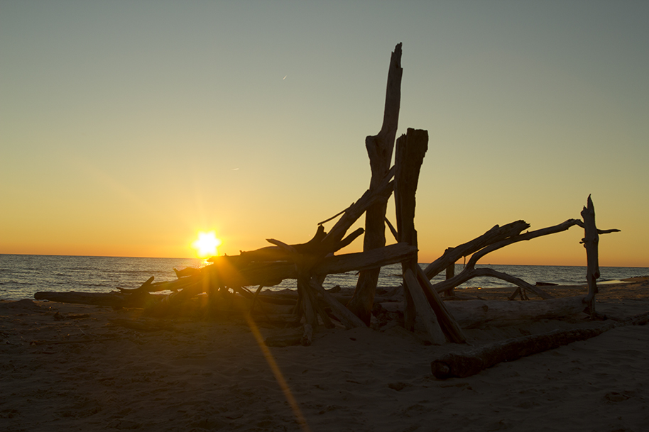
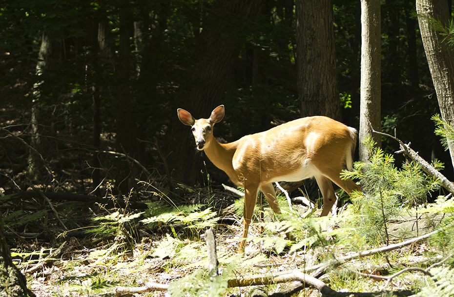
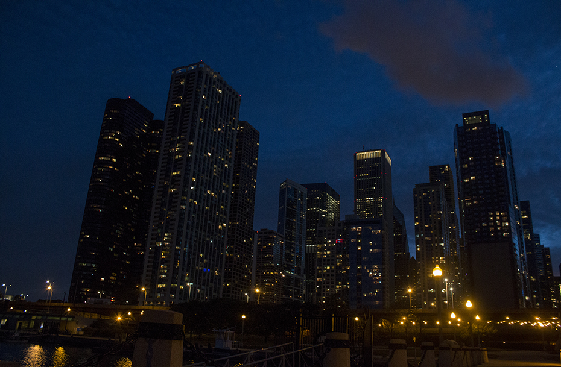

"He is the best sailor who can steer within fewest points of the wind, and exact a motive power out of the greatest obstacles." -Walter Scott
Featured Work

Ludington, MI
July, 2013

Ludington, MI
July, 2014

Chicago, IL
April, 2015
Beautiful Beaches
This was from my first trip to Ludington, MI. The view of Lake Michigan was absolutley gorgeous!
Cities
I took this picture April 2015, on my trip to Chicago. The cityscape is absolutely gorgeous at night.
Animals in the wild
This picture was also taken in Ludington, MI. This deer was about 20 feet from the trail we were walking. I managed to snap this picture before it took off and ran.